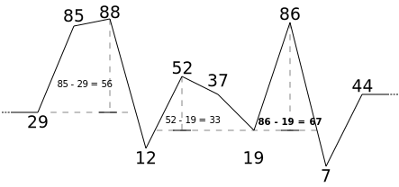

There’s usually an easy problem that everyone can solve; then
problems get progressively harder up to a problem that only a couple
teams can solve.
Solutions not only have to produce the correct output, but also be in
the correct/expected time complexity. It’s often easy to get the correct
output through brute-force simulation ❌, but quite hard to do it in an
optimal time complexity ✅.
Sweden may not have a particularly impressive mountain range compared
to other NCPC countries such as Norway and Iceland, but at least it
beats the flatlands of Denmark. The situation is not so clear when
comparing other member countries though. For example, is Estonia more
mountainous than Lithuania1? To settle this question, you want to
determine which of the two countries has the most impressive mountain
peak.
Highest Hill (2)
A mountain range is defined by sampling the heights hi of n equidistant points. Within a
mountain range, we call a triple of indices 1 ≤ i < j < k ≤ n
a peak if hi ≤ ⋯ ≤ hj ≥ ⋯ ≥ hk.
The height of a peak is defined as the smaller of hj − hi
and hj − hk.
Given a mountain range, can you find the height of its
highest peak?
n, the number of samples
may go up to 200000!
Highest Hill (3)
Sample Input 1
11
0 1 2 3 4 5 4 3 2 1 0
Sample Output 1
5
Highest Hill (4)
Sample Input 2
10
29 85 88 12 52 37 19 86 7 44
Sample Output 2
67

Can you solve this?
In O(n3) “time
limit exceeded”, no points… ❌
In O(n2) “time
limit exceeded”, no points still… ❌
We have a mailing list and a Discord server. We have
occasional meetups and practice sessions. You can find
more information on our website.
The mailing list is maintained by Rudy Matela. Let me know if you
want in and you’ll be informed of when we hold practice sessions,
contests or meetups.
The Discord server is
maintained by students (Rudy is not there).
https://jukod.github.io/
JU Kod Study Group (2)
On the JU Kod website, you’ll
find a list of interesting problems to start practicing: